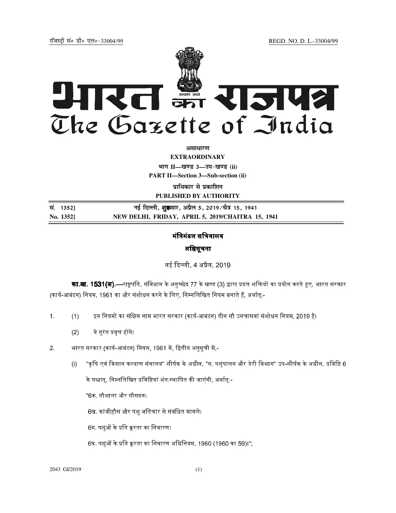
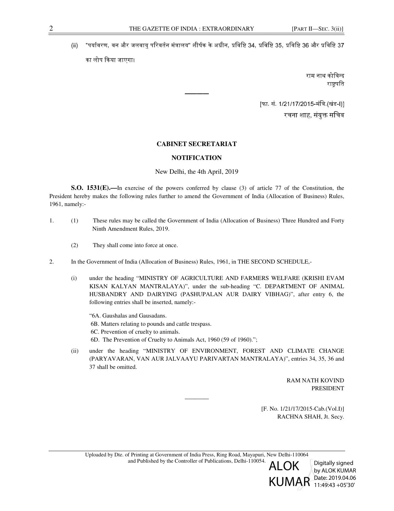

Amendment #349 (S.O. 1531 (E), 2019)
2 changes: 0 to the First Schedule, 2 to the Second Schedule. 2 applied
The order, page by page
Page 1 of 2

Page 2 of 2

12after Schedule 2 › MINISTRY OF AGRICULTURE AND FARMERS WELFARE › DEPARTMENT OF ANIMAL HUSBANDRY AND DAIRYING › entry 6
- 6A. Gaushalas and Gausadans.
- 6B. Matters relating to pounds and cattle trespass.
- 6C. Prevention of cruelty to animals.
- 6D. The Prevention of Cruelty to Animals Act, 1960 (59 of 1960).
applied at schedule 2 › ministry MINISTRY OF AGRICULTURE AND FARMERS WELFARE › department C › part I › entry 6A in the Rules after #349
Schedule 2 › MINISTRY OF ENVIRONMENT, FOREST AND CLIMATE CHANGE › entry 34; Schedule 2 › MINISTRY OF ENVIRONMENT, FOREST AND CLIMATE CHANGE › entry 35; Schedule 2 › MINISTRY OF ENVIRONMENT, FOREST AND CLIMATE CHANGE › entry 36; Schedule 2 › MINISTRY OF ENVIRONMENT, FOREST AND CLIMATE CHANGE › entry 37
applied at schedule 2 › ministry MINISTRY OF ENVIRONMENT, FOREST AND CLIMATE CHANGE › entry 34 in the Rules after #349
How this document was read
From the Government of India (Allocation of Business) Rules, 1961 and their amendments, as published by the Cabinet Secretariat (cabsec.gov.in), read by orgpedia. The readings of the older scanned gazettes have known gaps.